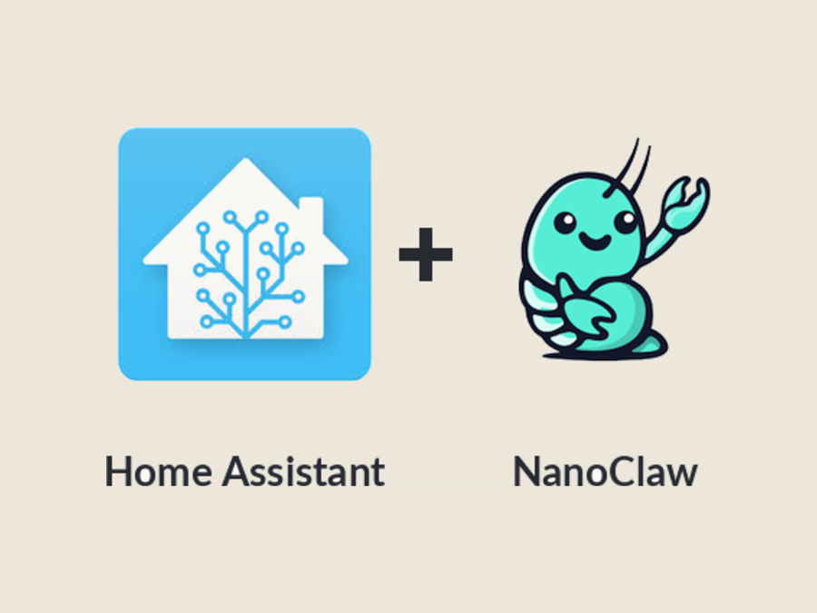
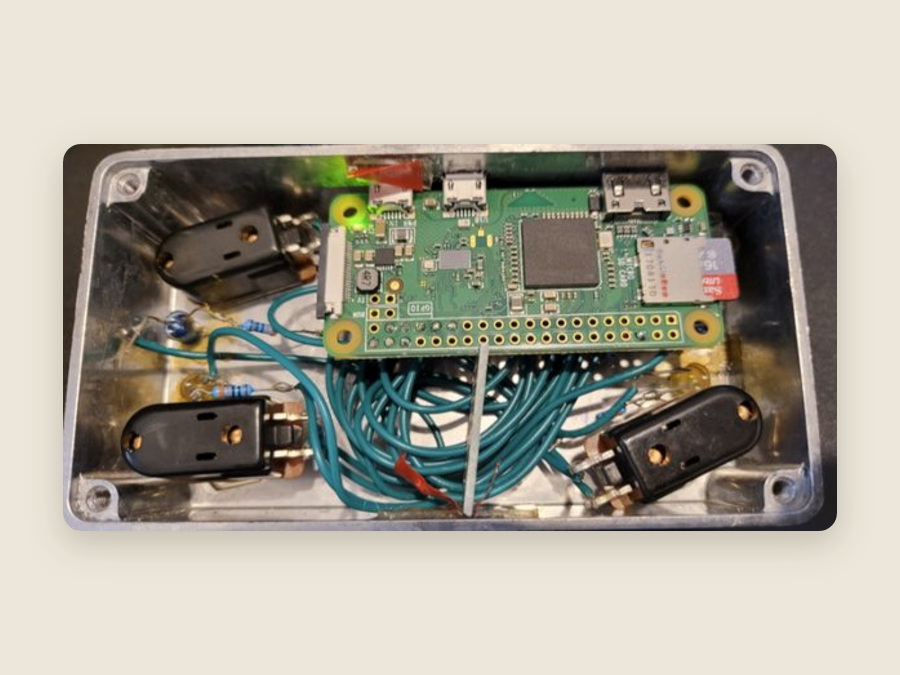
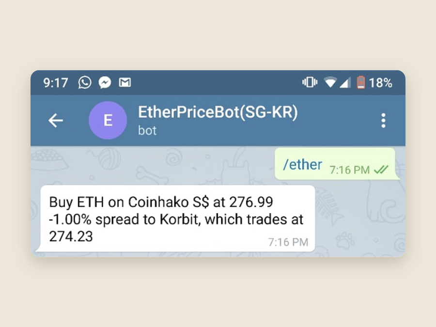
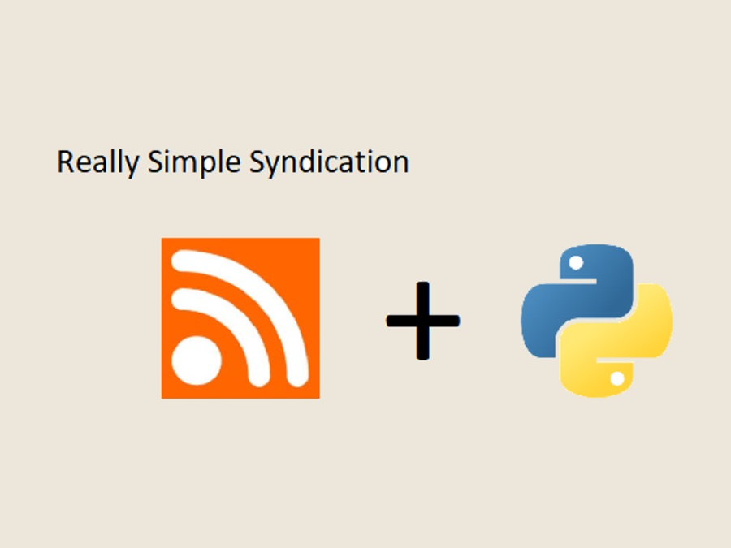
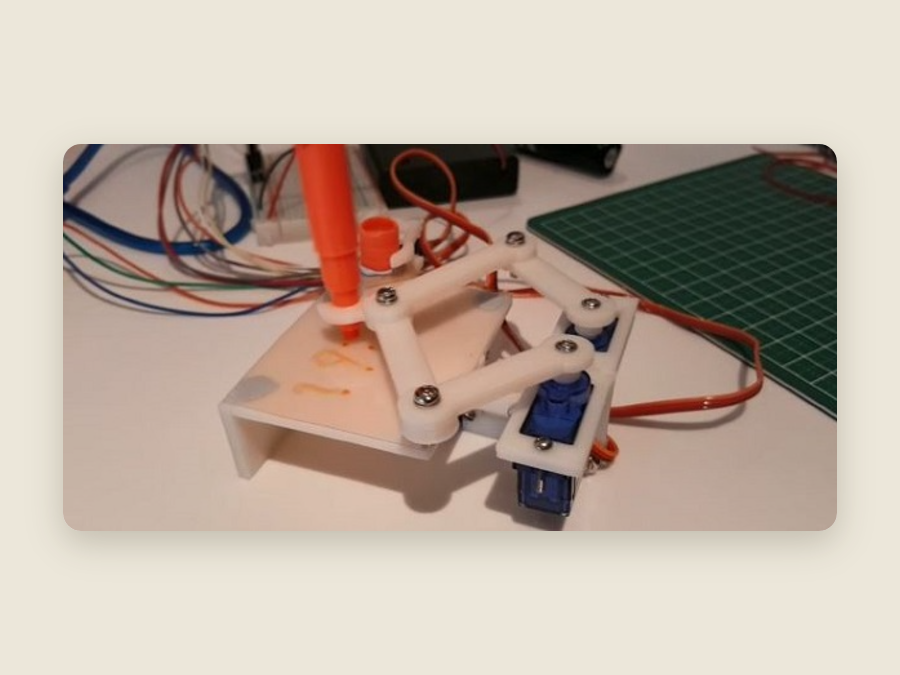
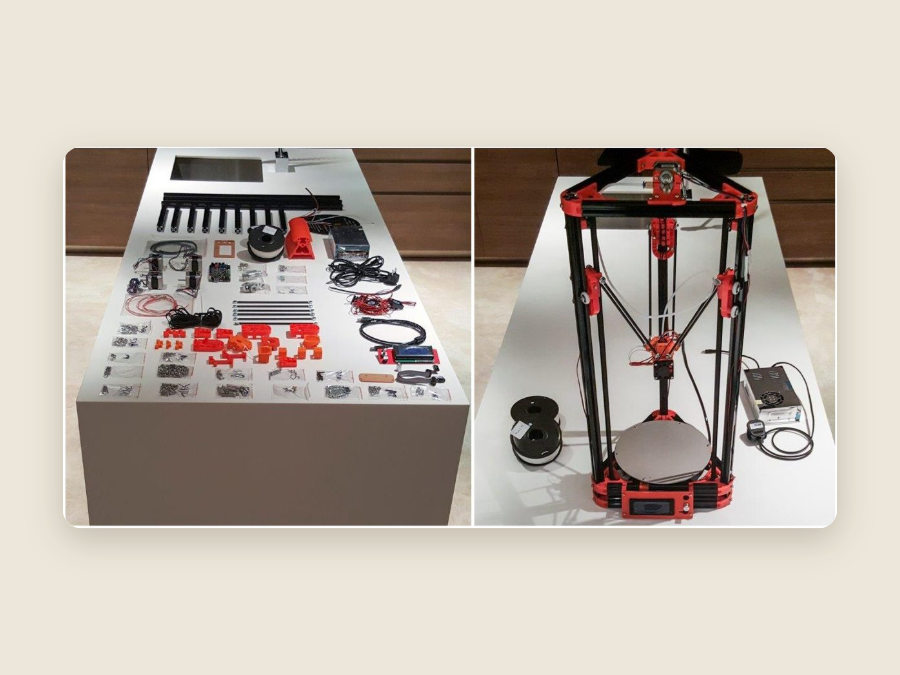

Weekend projects in home automation, AI agents, 3D printing and Python — built and documented from Singapore.
Currently — a Claude agent that runs my house over WhatsAppApr 2026 Latest · Home automation
A self-hosted Claude agent on WhatsApp, wired into Home Assistant through ha-mcp — it writes automations, reads CCTV, debugs itself, and runs the house from anywhere. No VPN, no port forwarding.

Jun 2020 · Raspberry Pi
Four cheap footswitches on a Pi Zero's GPIO, sending MIDI Control Change messages to an Atomic Amplifire 6 — with short/long-press handling and LED feedback. Written in Python.

Dec 2018 · Python
A Telegram bot that fetches the spot ETH price and the (now-defunct) "Kimchi premium" between Korean and global exchanges. Written in Python.

Aug 2017 · Python
A lightweight always-on-top desktop ticker built with tkinter and feedparser, polling SGX company announcements and the Straits Times every minute and surfacing the latest entries.

Apr 2017 · 3D printing
A 3D-printed, servo-driven mechanical arm that writes the time on a small board and wipes it clean once a minute. A remix of Joo's Plot Clock, driven by an Arduino. Built with Alex Lim.

Mar 2017 · 3D printing
Eight hours over two evenings turning a US$250 FLSUN Kossel Delta kit into a working printer — and learning how every slicer variable depends on all the others. Built with Alex Lim.

Hi, I'm Mark. I keep this site as a place to consolidate what I'm learning and to document the things I build on weekends.
It's mostly home automation, AI, 3D printing and Python — built and written up from Singapore.